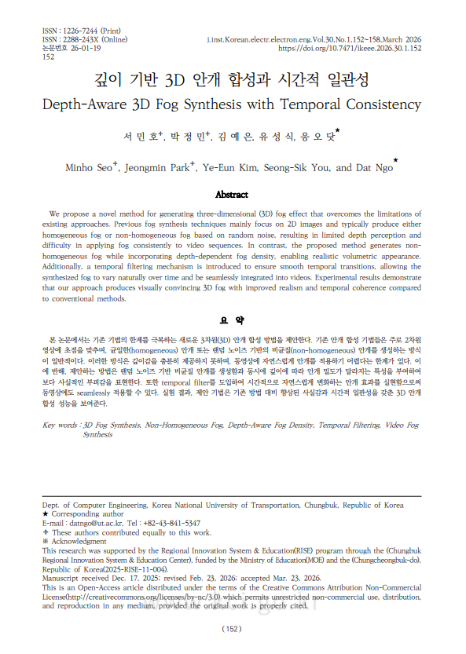
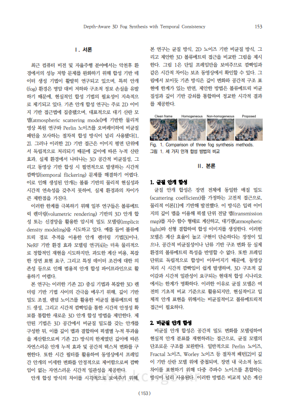
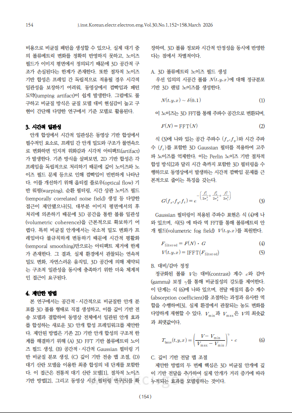
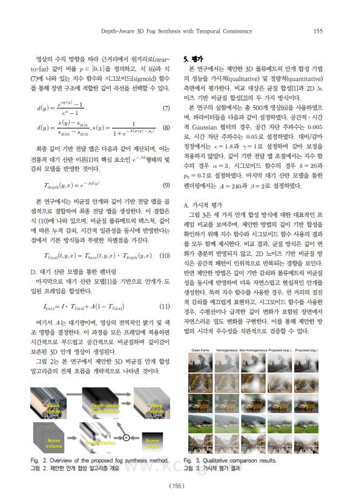
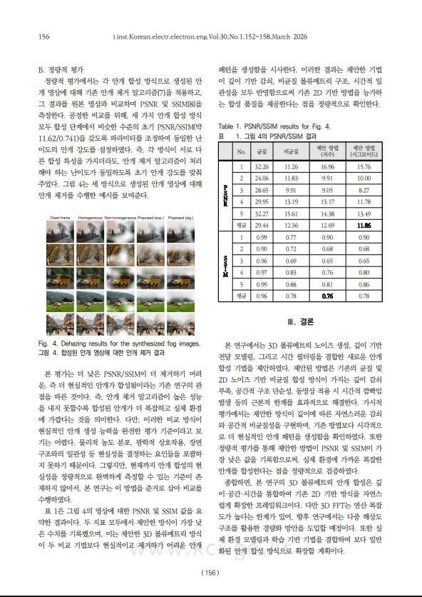
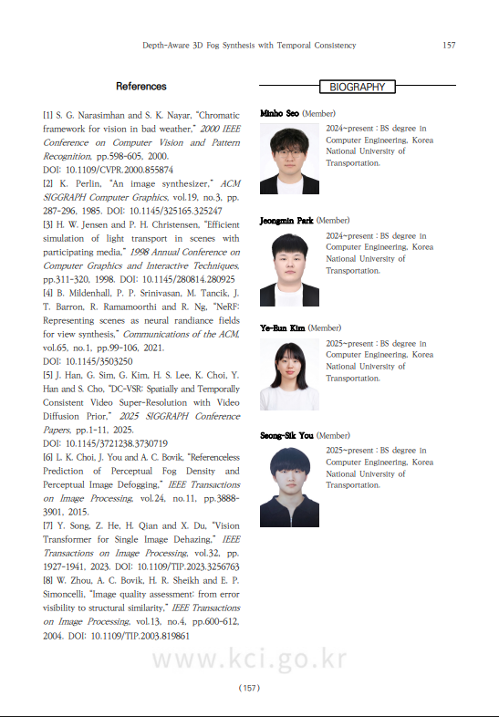
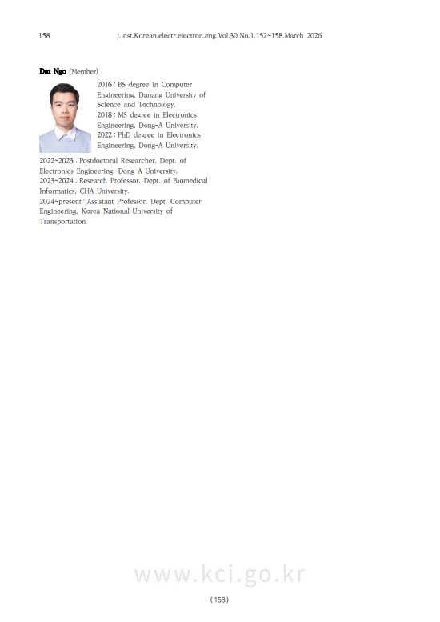
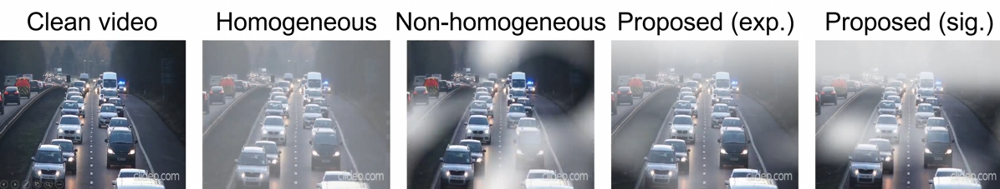
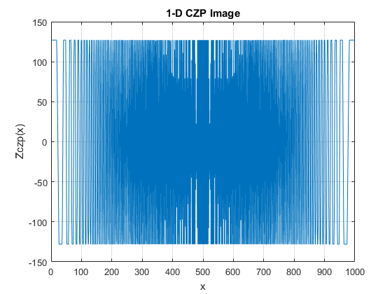
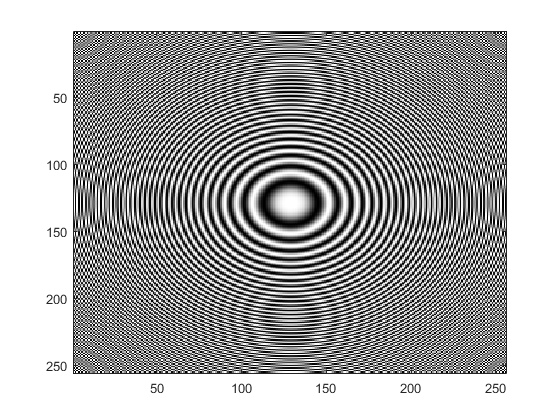

소개 (Biography)
저는 한국교통대학교에서 학사 학위를 취득 중인 컴퓨터 공학과 학부연구생입니다. 컴퓨터비전 영상 처리와 정보 보안의 교차점에 중점을 둔 연구를 진행하고 있으며, 최근에는 드론 및 레이더 연구에서 시작해 이미지 디헤이징 기술 개발로 연구 영역을 진행하고 있습니다.
현재는 사랑으로 노인복지센터 CS & IT Infrastructure Leader로 활동하고 있습니다.
EVALAB, 2025. 임베디드, 컴퓨터 비전 & AI 연구실, 한국교통대학교 연구실 홈페이지
GITHUB 2026 Minho Seo (ITsuki) Github 홈페이지
사랑으로 노인복지센터 대표 홈페이지
사용 언어 (Using language) C, C++, C#, Blue print, Sql, python, Java, JS. Php
학력 (Education)
2030. 03 - 2032
Pohang University of Science and Technology (POSTECH)
Prospective Master's Degree in Computer Engineering
2025. 07 - 2026
San Francisco State University (SFSU)
a certificate of completion for the noncredit program & college of Professional
2024. 03 - 2030
Korea National University of Transportation (KNUT)
Bachelor's Degree in Computer Engineering / CSE
2021. 03 - 2023
High School Diploma, Goun High School
Goun High School Graduate & President of OVERFLOW Computer Club
활동 내역 (Activity Log)
2026. 03 - 2027
군 복무 (Military Service)
Social Service Agent | CS & IT Infrastructure Lead
2026. 03 - 2027
Team Leader of 2026 Capstone Design (CDP)
2026 CDP Cherry Blossom Team (지도교수: 우성희)
2026. 03 - 2028
NTLAB 학부 연구생 팀장 (Undergraduate Research Assistant)
NTALAB Team Leader (지도교수: 우성희)
2025. 09 - 2026
CS & IT of 2025 Student Team Chellenge (SCT)
2025 SCT Time Attack Team (지도교수: Dat Ngo)
2025. 08 - 2026
잇세대 (IT:世代) - 충북형 세대연결 디지털 리터러시 멘토링 프로그램 in U.S.A San Francisco State University (SFSU)
2025. 07. 06 ~ 2026 동안 진행된 샌프란시스코 어학연수 및 현지 기관 인터뷰를 통해 고령층 디지털 포용의 핵심 전략을 수립했습니다. in U.S.A San Francisco State.
2025. 07 - 2026
San Francisco State University (SFSU)
San Francisco Discover Program | Center for Global Engagement
Global Experience: San Francisco, Participated in an intensive language program and the San Francisco Discover Program at San Francisco State University.
2025. 06 - 2026
EVLAB 학부 연구생 팀장 (Undergraduate Research Assistant)
EVALAB Team Leader (지도교수: Dat Ngo)
2025. 03 - 2026
Team Leader of 2025 Capstone Design (CDP)
2025 CDP Pafrika Team (지도교수: Dat Ngo)
2024 - 2025
KNUT OVERFLOW 동아리 회장 (Club President)
President of KNUT OVERFLOW Computer Club
2022 - 2024
GOUN OVERFLOW 동아리 회장 (Club President)
President of GOUN OVERFLOW Computer Club
연구 분야 (Research Interests)
*Computer Vision / *Machine Learning / *Server Infrastructure (Linux, Apache, windows server) / *Full-stack (Backend & Frontend) / Digital Signal & Image Processing / Information Security / Embedded System Design / Circuit Design / Drone & UAV Design
저널 논문 (Journal Papers)
- 1. *서민호, *박정민, 김예은, 유성식, Corresponding Author : Dat Ngo
[KCI] DepthAware_3D_Fog_Synthesis_with_Temporal_Consistenc. Journal, 2026. PDF. | DOI
- 2. *서민호, *송여민, 유성식, 강민재, Corresponding Author : 우성희
[KCI] Deep Learning-based Real-time Titration Endpoint Prediction and Automation System. Journal, 2026. PDF | DOI
학술대회 논문 (Conference Papers)
- 1. 서민호 — 대한전자공학회 2026년도 하계종합학술대회 Conference paper, 2026. PDF
- 2. 서민호 — 유럽 컴퓨터 언어학 협회(EACL) 2028 학술대회 Conference paper, 2028. PDF
수상 이력 (Achievements)
- 1. 2025학년도 해외연수 지원사업 (in U.S.A SFSU) 장려상 수상 [서민호] - KNUT 국제교류본부, 2025 PDF
- 2. 2022 고운코딩대회 금상 수상 (1등) [서민호] - 고운고등학교, 2022. PDF
- 3. 2022 SFPC in JEJU 장려상 수상 (5등) - SFPC JEJU, 2022. PDF
- 4. 2021 고운코딩대회 금상 동상 (3등) [서민호] - 고운고등학교, 2021. PDF
수료증 (Certificate of Completion)
- 1. 2025 San Francisco State University (SFSU) San Francisco Discover Program - Center for Global Engagement Benjamin Huynh, 2025. PDF
- 2. 국립한국교통대학교 국제 컨퍼런스 2025 [서민호] - KNUT 산학협력단, 2025. PDF
- 3. 2025학년도 학습포트폴리오 공모전 PDF
- 4. 2021 고운코딩대회 금상 동상 (3등) [서민호] - 고운고등학교, 2021. PDF
프로젝트 (Projects)
시간적 일관성을 갖춘 깊이 인식 3D 안개 합성 (Depth-Aware 3D Fog Synthesis)
 |
 |
 |
 |
 |
 |
 |
기존의 방법 A는 화면 전체에 균일한 밀도의 안개를 덮는 균질 안개 모델(Homogeneous Fog Model)을 사용합니다. 이 방식은 단순히 이미지 위에 투명한 회색 레이어를 얹는 것과 같아서, 관찰자와 객체 간의 거리에 따른 물리적인 빛 산란 현상을 재현하지 못합니다.

블라인드 이미지 복원 (Blind Image Restoration)
향상된 시각적 인지와 센서 활용을 위한 이미지 디헤이징 기술

BMP 이미지 처리 AI (BMP Image AI)
BMP 형식의 이미지 데이터 처리 및 분석

{kind=link}